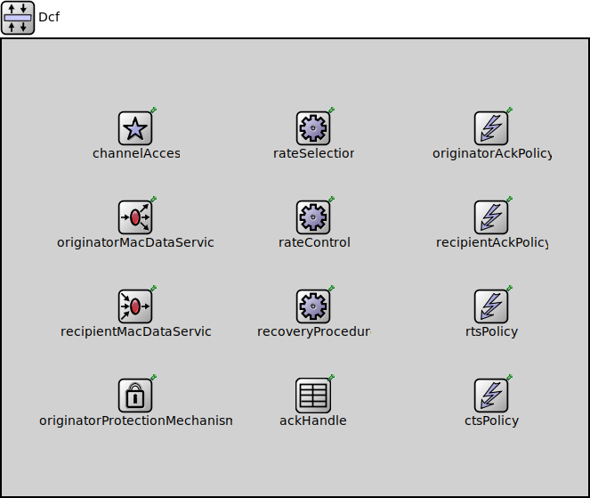

Package: inet.linklayer.ieee80211.mac.coordinationfunction
Dcf
compound moduleIEEE 802.11 Distributed Coordination Function
Usage diagram
The following diagram shows usage relationships between types. Unresolved types are missing from the diagram.
Inheritance diagram
The following diagram shows inheritance relationships for this type. Unresolved types are missing from the diagram.
Parameters
| Name | Type | Default value | Description |
|---|---|---|---|
| rxModule | string | ||
| txModule | string |
Properties
| Name | Value | Description |
|---|---|---|
| class | Dcf | |
| display | i=block/layer |
Signals
| Name | Type | Unit |
|---|---|---|
| frameSequenceStarted | ||
| packetDropped | inet::Packet | |
| datarateSelected | double | |
| packetReceivedFromPeer | inet::Packet | |
| packetSentToPeer | inet::Packet | |
| linkBroken | inet::Packet | |
| frameSequenceFinished |
Statistics
| Name | Title | Source | Record | Unit | Interpolation Mode |
|---|---|---|---|---|---|
| packetReceivedFromPeerMulticast | packets received: multicast | ieee80211Multicast(packetReceivedFromPeer) | count, sum(packetBytes), vector(packetBytes) | none | |
| packetDropNotAddressedToUs | packet drops: not addressed to us | packetDropReasonIsNotAddressedToUs(packetDropped) | count, sum(packetBytes), vector(packetBytes) | none | |
| packetDropQueueOverflow | packet drops: queue overflow | packetDropReasonIsQueueOverflow(packetDropped) | count, sum(packetBytes), vector(packetBytes) | none | |
| packetDropRetryLimitReached | packet drops: retry limit reached | packetDropReasonIsRetryLimitReached(packetDropped) | count, sum(packetBytes), vector(packetBytes) | none | |
| datarateSelected | datarates selected | vector | none | ||
| packetSentToPeerWithoutRetry | packets sent: without retry | ieee80211NotRetry(packetSentToPeer) | count, sum(packetBytes), vector(packetBytes) | none | |
| packetSentToPeer | packets sent | count, sum(packetBytes), vector(packetBytes) | none | ||
| linkBroken | link breaks | count, vector? | none | ||
| packetDrop | packet drops | packetDropped | count, sum(packetBytes), vector(packetBytes) | none | |
| frameSequenceFinished | finished frame sequences | count | |||
| packetSentToPeerUnicast | packets sent: unicast | ieee80211Unicast(packetSentToPeer) | count, sum(packetBytes), vector(packetBytes) | none | |
| packetReceivedFromPeerUnicast | packets received: unicast | ieee80211Unicast(packetReceivedFromPeer) | count, sum(packetBytes), vector(packetBytes) | none | |
| packetSentToPeerWithRetry | packets sent: with retry | ieee80211Retry(packetSentToPeer) | count, sum(packetBytes), vector(packetBytes) | none | |
| frameSequenceNumPackets | frame sequences: number of packets | frameSequenceNumPackets(frameSequenceFinished) | histogram, vector? | ||
| packetSentToPeerBroadcast | packets sent: broadcast | ieee80211Broadcast(packetSentToPeer) | count, sum(packetBytes), vector(packetBytes) | none | |
| packetReceivedFromPeerWithRetry | packets received: with retry | ieee80211Retry(packetReceivedFromPeer) | count, sum(packetBytes), vector(packetBytes) | none | |
| frameSequenceActive | frame sequence active | warmup(count(frameSequenceStarted)-count(frameSequenceFinished)) | vector | sample-hold | |
| packetReceivedFromPeer | packets received | count, sum(packetBytes), vector(packetBytes) | none | ||
| frameSequenceDuration | frame sequence durations | frameSequenceDuration(frameSequenceFinished) | histogram, vector? | ||
| packetReceivedFromPeerWithoutRetry | packets received: without retry | ieee80211NotRetry(packetReceivedFromPeer) | count, sum(packetBytes), vector(packetBytes) | none | |
| packetSentToPeerMulticast | packets sent: multicast | ieee80211Multicast(packetSentToPeer) | count, sum(packetBytes), vector(packetBytes) | none | |
| packetReceivedFromPeerBroadcast | packets received: broadcast | ieee80211Broadcast(packetReceivedFromPeer) | count, sum(packetBytes), vector(packetBytes) | none |
Unassigned submodule parameters
| Name | Type | Default value | Description |
|---|---|---|---|
| channelAccess.inProgressFrames.pendingQueueModule | string | "^.pendingQueue" | |
| channelAccess.inProgressFrames.originatorMacDataServiceModule | string | "^.^.originatorMacDataService" | |
| channelAccess.inProgressFrames.ackHandlerModule | string | "^.^.ackHandler" | |
| rateSelection.multicastFrameBitrate | double | -1bps | |
| rateSelection.responseAckFrameBitrate | double | -1bps | |
| rateSelection.responseCtsFrameBitrate | double | -1bps | |
| rateSelection.dataFrameBitrate | double | -1bps |
fastest |
| rateSelection.dataFrameBandwidth | double | nan Hz |
unspecified by default |
| rateSelection.dataFrameNumSpatialStreams | int | -1 |
unspecified by default |
| rateSelection.mgmtFrameBitrate | double | -1bps |
fastest |
| rateSelection.controlFrameBitrate | double | -1bps | |
| recoveryProcedure.shortRetryLimit | int | 7 | |
| recoveryProcedure.longRetryLimit | int | 4 | |
| originatorProtectionMechanism.rateSelectionModule | string | ||
| originatorAckPolicy.rateSelectionModule | string | ||
| originatorAckPolicy.ackTimeout | double | -1s | |
| recipientAckPolicy.rateSelectionModule | string | ||
| rtsPolicy.rateSelectionModule | string | ||
| rtsPolicy.ctsTimeout | double | -1s | |
| rtsPolicy.rtsThreshold | int | 2346B | |
| ctsPolicy.rxModule | string | ||
| ctsPolicy.rateSelectionModule | string |
Source code
// // IEEE 802.11 Distributed Coordination Function // module Dcf like IDcf { parameters: string rxModule; string txModule; *.rateSelectionModule = "^.rateSelection"; *.rxModule = "^." + this.rxModule; @class(Dcf); @display("i=block/layer"); @signal[packetSentToPeer](type=inet::Packet); @signal[packetReceivedFromPeer](type=inet::Packet); @signal[linkBroken](type=inet::Packet); @signal[packetDropped](type=inet::Packet); @signal[frameSequenceStarted]; @signal[frameSequenceFinished]; @signal[datarateSelected](type=double); @statistic[packetSentToPeer](title="packets sent"; record=count,sum(packetBytes),vector(packetBytes); interpolationmode=none); @statistic[packetSentToPeerUnicast](title="packets sent: unicast"; source=ieee80211Unicast(packetSentToPeer); record=count,sum(packetBytes),vector(packetBytes); interpolationmode=none); @statistic[packetSentToPeerMulticast](title="packets sent: multicast"; source=ieee80211Multicast(packetSentToPeer); record=count,sum(packetBytes),vector(packetBytes); interpolationmode=none); @statistic[packetSentToPeerBroadcast](title="packets sent: broadcast "; source=ieee80211Broadcast(packetSentToPeer); record=count,sum(packetBytes),vector(packetBytes); interpolationmode=none); @statistic[packetSentToPeerWithRetry](title="packets sent: with retry"; source=ieee80211Retry(packetSentToPeer); record=count,sum(packetBytes),vector(packetBytes); interpolationmode=none); @statistic[packetSentToPeerWithoutRetry](title="packets sent: without retry"; source=ieee80211NotRetry(packetSentToPeer); record=count,sum(packetBytes),vector(packetBytes); interpolationmode=none); @statistic[packetReceivedFromPeer](title="packets received"; record=count,sum(packetBytes),vector(packetBytes); interpolationmode=none); @statistic[packetReceivedFromPeerUnicast](title="packets received: unicast"; source=ieee80211Unicast(packetReceivedFromPeer); record=count,sum(packetBytes),vector(packetBytes); interpolationmode=none); @statistic[packetReceivedFromPeerMulticast](title="packets received: multicast"; source=ieee80211Multicast(packetReceivedFromPeer); record=count,sum(packetBytes),vector(packetBytes); interpolationmode=none); @statistic[packetReceivedFromPeerBroadcast](title="packets received: broadcast"; source=ieee80211Broadcast(packetReceivedFromPeer); record=count,sum(packetBytes),vector(packetBytes); interpolationmode=none); @statistic[packetReceivedFromPeerWithRetry](title="packets received: with retry"; source=ieee80211Retry(packetReceivedFromPeer); record=count,sum(packetBytes),vector(packetBytes); interpolationmode=none); @statistic[packetReceivedFromPeerWithoutRetry](title="packets received: without retry"; source=ieee80211NotRetry(packetReceivedFromPeer); record=count,sum(packetBytes),vector(packetBytes); interpolationmode=none); @statistic[linkBroken](title="link breaks"; record=count,vector?; interpolationmode=none); @statistic[packetDrop](title="packet drops"; source=packetDropped; record=count,sum(packetBytes),vector(packetBytes); interpolationmode=none); @statistic[packetDropNotAddressedToUs](title="packet drops: not addressed to us"; source=packetDropReasonIsNotAddressedToUs(packetDropped); record=count,sum(packetBytes),vector(packetBytes); interpolationmode=none); @statistic[packetDropQueueOverflow](title="packet drops: queue overflow"; source=packetDropReasonIsQueueOverflow(packetDropped); record=count,sum(packetBytes),vector(packetBytes); interpolationmode=none); @statistic[packetDropRetryLimitReached](title="packet drops: retry limit reached"; source=packetDropReasonIsRetryLimitReached(packetDropped); record=count,sum(packetBytes),vector(packetBytes); interpolationmode=none); @statistic[frameSequenceFinished](title="finished frame sequences"; record=count); @statistic[frameSequenceDuration](title="frame sequence durations"; source=frameSequenceDuration(frameSequenceFinished); record=histogram,vector?); @statistic[frameSequenceNumPackets](title="frame sequences: number of packets"; source=frameSequenceNumPackets(frameSequenceFinished); record=histogram,vector?); @statistic[frameSequenceActive](title="frame sequence active"; source=warmup(count(frameSequenceStarted)-count(frameSequenceFinished)); record=vector; interpolationmode=sample-hold; autoWarmupFilter=false); @statistic[datarateSelected](title="datarates selected"; record=vector; interpolationmode=none); submodules: // TODO consider merging Dcaf into Dcf, because its not like the relationship between Hcf and Edcaf or // TODO maybe move PendingQueue and InProgressFrames in Edcaf? channelAccess: Dcaf { parameters: @display("p=150,100"); } originatorMacDataService: OriginatorMacDataService { parameters: @display("p=150,200"); } recipientMacDataService: RecipientMacDataService { parameters: @display("p=150,300"); } rateSelection: RateSelection { parameters: rateControlModule = "^.rateControl"; @display("p=350,100"); } rateControl: <default("")> like IRateControl if typename != "" { parameters: @display("p=350,200"); } recoveryProcedure: NonQosRecoveryProcedure { parameters: cwCalculatorModule = "^.channelAccess"; rtsPolicyModule = "^.rtsPolicy"; @display("p=350,300"); } originatorProtectionMechanism: OriginatorProtectionMechanism { parameters: @display("p=150,400"); } ackHandler: AckHandler { parameters: @display("p=350,400"); } originatorAckPolicy: OriginatorAckPolicy { parameters: @display("p=550,100"); } recipientAckPolicy: RecipientAckPolicy { parameters: @display("p=550,200"); } rtsPolicy: RtsPolicy { parameters: @display("p=550,300"); } ctsPolicy: CtsPolicy { parameters: @display("p=550,400"); } }File: src/inet/linklayer/ieee80211/mac/coordinationfunction/Dcf.ned
 This documentation is released under the Creative Commons license
This documentation is released under the Creative Commons license